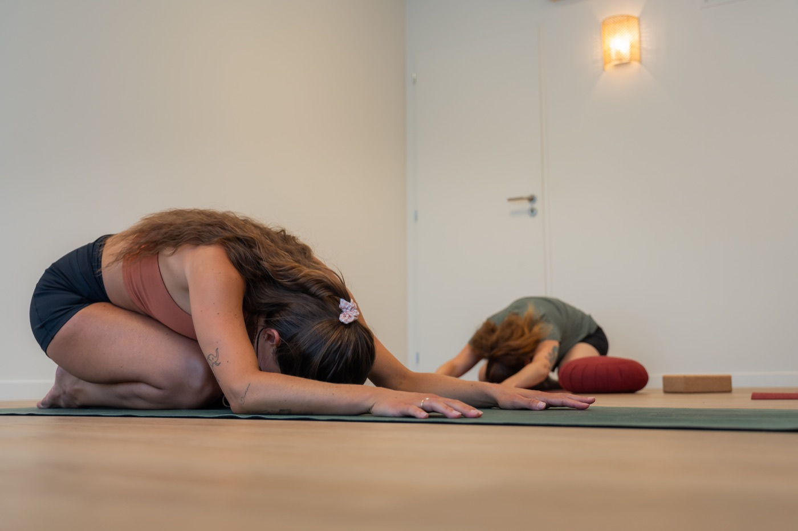

Les jours raccourcissent, la lumière se fait plus douce, la fraîcheur du matin s'installe peu à peu. Après le mouvement de l'été, puis l'agitation de la rentrée, le monde ralentit. Et si, au lieu de lutter contre ce ralentissement, on s'autorisait à le suivre ?
Ce que l'automne remue en nous
Je le ressens chaque année, dans mon corps comme dans ma tête. À l'automne, j'ai besoin de me replier, de rentrer dans un cocon. J'ai envie de chaleur : une douche chaude, un repas chaud, une tasse fumante entre les mains. J'ai envie de ralentir mes sorties, de me coucher plus tôt, de faire des choses qui apaisent.
Il y a aussi une tristesse : celle de laisser partir les longues journées d'été. Pour beaucoup d'entre nous, cette période s'accompagne d'un coup de mou, d'une fatigue, voire d'une vraie déprime saisonnière. Je sais de quoi je parle : moi aussi, j'en suis très affectée, chaque année. Si tu la ressens, sache d'abord une chose : tu n'es pas « moins bien » qu'avant, et tu n'es pas seul·e. Ton corps réagit simplement à un changement bien réel autour de lui.
Ce qui me permet de la traverser, année après année, c'est le yoga. Il est ma racine.
Septembre a souvent été un mois chargé, entre la reprise, l'organisation, les mille choses à caler. Octobre, lui, nous invite à ralentir.
Notre corps est le reflet de la nature
Dans le yoga traditionnel, on apprend que le corps est le reflet de la nature et qu'il suit naturellement le cycle des saisons. Il est intelligent. Ce besoin de recul, de repos et de calme n'est pas une faiblesse : c'est simplement le reflet de la saison.
L'ayurvéda, la science sœur du yoga, décrit l'automne comme la saison de Vata, l'énergie de l'air et de l'espace : légère, mobile, sèche, froide. Quand Vata augmente, on peut se sentir plus dispersé·e, plus anxieux·se, plus fatigué·e, avoir froid facilement ou la peau qui tiraille. Personnellement, je suis principalement de constitution Vata, alors je le sens très nettement !
À cette saison, notre feu digestif, Agni, diminue lui aussi. Pour l'entretenir, le corps réclame du chaud, de l'onctueux, du nourrissant.
Nous sommes faits de cette nature cyclique. Plus nous nous abandonnons à ce rythme, plus nous apprenons à apprécier chaque phase que la nature nous offre, y compris celles qui ralentissent.
Mes rituels pour traverser l'automne
Voici ce qui m'aide, moi, à cette période. Prends ce qui te parle et laisse le reste.
Manger et boire chaud, avec des épices réchauffantes. Soupes, plats mijotés, gingembre, cannelle, cardamome… Mon allié de l'automne : le chai latte. Ces épices soutiennent Agni et réchauffent de l'intérieur.
Le massage à l'huile de sésame tiède. Chaque soir, je masse mon corps avec un peu d'huile de sésame tiédie. C'est un geste tout simple qui réchauffe, nourrit la peau et apaise énormément le système nerveux. Un vrai moment de douceur envers soi.
Un rythme régulier, calé sur la lumière. Me coucher tôt et me lever tôt (pour moi, c'est 21 h – 5 h) fait toute la différence. Pas besoin d'aller jusque-là : l'essentiel est de garder des horaires réguliers, qui ancrent et rassurent le corps.
S'autoriser à se reposer. Faire une sieste quand j'en ressens le besoin. Écouter mon corps quand il demande du repos, sans culpabiliser.
Lire, étudier, se tourner vers l'intérieur. L'automne m'offre du temps pour la lecture, l'étude, mes projets, tout ce qui était plus difficile pendant l'été. C'est une saison d'introspection, où l'on peut se poser en silence avec soi-même.
Adapter sa pratique de yoga à la saison
Dans la lignée de T. Krishnamacharya, dont je suis l'enseignement, la pratique s'adapte à la personne : à son âge, à son état, à ses besoins. Et par nature, elle suit aussi le moment de l'année. C'est l'ayurvéda qui nous éclaire sur ce lien avec les saisons : il nous invite à accorder notre quotidien et notre pratique personnelle au rythme de la nature.
À l'automne, j'ai envie de séances douces mais stimulantes à la fois : des postures qui ancrent, des mouvements lents et fluides, un souffle profond, sans chercher la performance. Et surtout, de relaxations plus longues : mon corps a besoin de se déposer et de calme.
J'y ajoute un peu de Kapalabhati, une respiration dynamique qui réchauffe et stimule le feu digestif.
C'est une technique à apprendre auprès d'un·e enseignant·e ; elle est déconseillée pendant la grossesse, en cas d'hypertension, de problèmes cardiaques ou de chirurgie abdominale récente. Dans le doute, demande-moi ou demande à ton médecin.

Faire de sa pratique la racine de sa journée
L'été, avec tout son mouvement, sa chaleur et cette énergie qui nous tire sans cesse vers l'extérieur, la pratique passe souvent au second plan. C'est normal.
L'automne, lui, est le moment parfait pour y revenir. Pour en faire la racine de ta journée : quelques minutes le matin, un temps de respiration, une relaxation le soir. Pour moi, qui vis chaque année cette déprime saisonnière, c'est ce qui m'aide le plus à tenir le coup quand la lumière baisse. Le yoga est ma racine : c'est à lui que je reviens, jour après jour, pour retrouver de l'ancrage. C'est le moment idéal pour se reconnecter à ce qui nous nourrit intérieurement.
Le yoga peut beaucoup face au coup de mou de l'automne : il nous aide à écouter les besoins du corps, à nous relaxer, à nous reconnecter à nous-mêmes.
Une petite pratique d'automne
- Installe-toi en position assise, confortablement, à la lueur d'une bougie ou d'une lumière douce. Enveloppe-toi d'un plaid si tu veux.
- Masse ton ventre dans le sens des aiguilles d'une montre, avec des gestes lents, pour réchauffer Agni, ton feu digestif. Tu peux le faire avec un peu d'huile de sésame tiédie.
- Respire lentement par le nez. Après chaque expiration, retiens légèrement ton souffle, poumons vides, quelques instants, sans forcer : cela aide à nettoyer le corps en profondeur.
- Reprends une respiration normale et sens toutes les tensions de ton corps se déposer, comme des feuilles qui tombent d'un arbre.
- Chuchote des mantras ou des sons qui t'apaisent. Si tu n'en connais pas, tu peux simplement chuchoter le son OM.
- Termine allongé·e quelques minutes, les yeux fermés, sans rien faire. Juste accueillir.
Ce que j'aimerais que tu retiennes
Fais confiance à ton corps. Il est ton premier guide. Par nature, il s'adapte aux changements qui l'entourent et te montre ce dont tu as besoin. S'il te demande du repos, de la chaleur, du calme, suis cet élan. Autorise-toi à ralentir et à prendre de bonnes décisions pour toi et pour ta santé.
Cette saison t'invite à te déposer pour mieux te régénérer.
Avec douceur, Alizée 🍂
Envie de pratiquer ensemble cet automne ? Je donne des cours de yoga doux & traditionnel, tous niveaux, en studio autour d'Annecy : au cocon de La Bulle (Argonay) et chez Pure Vitality (Seynod).
Voir le calendrier et réserver